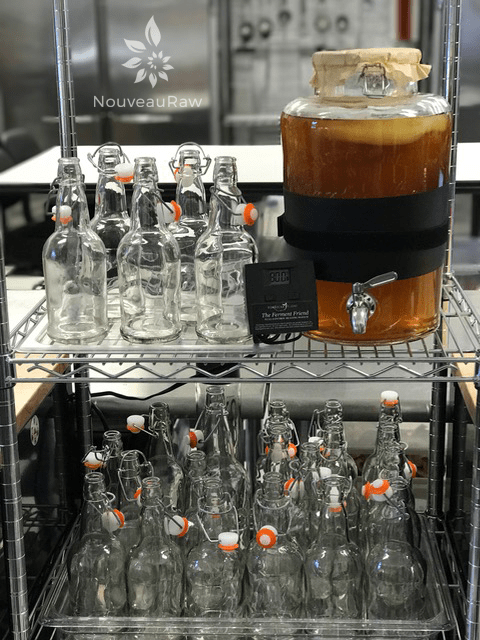
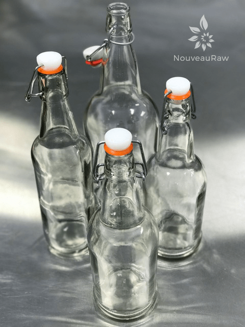

#3 – Kombucha – Equipment Needed

Here is just a quick summary of the equipment that I use and/or recommend. We all know that starting off with the best quality ingredients makes all the difference in the outcome of a recipe.. the same goes with having the right equipment.
I always want to do my best in setting you up with the right equipment from the get-go so you can have a successful experience. Let me learn from my mistakes, so you don’t have to unless you’re into that kind of thing. hehe
Kombucha making can become a very ceremonial tradition, and as time passes, you will find that there is a wide range of ways kombucha is made. Don’t let any of this frighten or confuse you. I am laying out the simple basics, and in time you will find your rhythm. We all dance to beat of our own drum, right?!
SCOBY:
- SCOBY – Learn how to grow your own (here).
- Or purchase one. I recommend (this) one.
Brewing Vessels:
- Glass jar – 1 or 2 gallons for batch brewing or
- Glass jar with a spigot for continuous brew
- Wooden barrel
- Stainless steel (grade 304 or higher) vessel
- Porcelain or Ceramic vessels
- The one I use no longer shows for sale but this (one) is close.
Spigot for Continuous Brew:
- You will want a glass container large enough for the amount you desire, and it needs to have a corrosion-resistant spigot. Most glass jars that come with a spigot made of poor quality materials.
- The spigot should be made from either wood, stainless steel (304 grade or better, or a professional-grade plastic.
- The spigot needs to be removable for cleaning.
- I use (this) one.

Optional – add a heating band
Heating Band:
- A heating band will help keep your brew at an even, optimal temperature.
- If your brew doesn’t hold the right temperature, you will end up with a thin SCOBY, a slow ferment, and even run the risk of the SCOBY falling asleep, stopping the fermenting process.
- I use (this) one because it has a digital temperature controller. You can set the temp you want to band to reach and walk away.
- This (one) works too; it just doesn’t come with the digital temp controller, you slide the dimmer up and down to find the sweet spot of temperature.
Thermometer Strip:
- To create a healthy brew, you want to monitor its temperature. The adhesive strip thermometer attaches to the side of the vessel letting you just how warm or cool the liquid is.
- I use (this) one.
Tightly woven fabric or a coffee filter, rubber band:
- Do not use cheesecloth because the holes are too big and fruit flies can squeak through.
- Use a breathable cloth that is lint-free.
- I use an unbleached coffee filter and a rubber band to secure it.
Long handle spoon:
- Needs to be long enough to reach the bottom of the brewing vessel.
- It can be wood, plastic, or stainless.

Funnel:
- A funnel may be needed for bottling if you are not doing continuous brew kombucha.
- It should be stainless steel or good quality food grade plastic.
- Click (here) to see the ones I recommend.
Bottling:
- Use heavy-duty glass jars that can handle pressure from carbonation. If you don’t plan on doing a second fermentation, then you don’t need to worry so much about this.
- Swing-top bottles are perfect. Just make sure you get good quality ones.
- Avoid using mason jars. They don’t hold a seal well, especially if doing a second fermentation.
- Avoid plastic containers as they don’t handle acidic liquids well.
- Avoid metal lids that may come in contact with the kombucha.
- I use the bottles found on (this) page. Don’t forget to get a bottle cleaning brush!
Let’s Go Shopping
SCOBY
Brewing Container & Spigot
Heating Band & Adhesive Temperature Strip
Misc. Tools
Nouveauraw.com is a participant in the Amazon Services LLC Associates Program, an affiliate advertising program designed to provide a means for us to earn fees by linking to
Amazon.com and affiliated sites – at no extra cost to you.
Thank you for your support! amie sue

What is Kombucha?
Kombucha Continuous Brew Method
Kombucha Maintenance of Continuous Brew
Kombucha – Ingredients Needed
Kombucha SCOBY – Growing from Scratch
Testing Sugar Levels in Kombucha
Bottling Kombucha from a Continuous Brew
Second Fermentation of Kombucha – Adding Flavor & Effervescence
Kombucha Aesthetics
Kombucha SCOBY Hotel
Dealing with Fruit Flies
© AmieSue.com